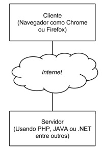

Treinamento sobre HTTP
Nesse treinamento focaremos nos fundamentos da web. Isto é importante pois a grande maioria das aplicações hoje em dia a utilizam de alguma forma ou funcionam dentro dela.
Não focaremos em nenhuma plataforma específica de desenvolvimento como Java ou PHP.
Focaremos nas regras de comunicação da web.
Quando se fala em HTTP, o primeiro pensamento que vem a nossa mente é sobre a utilização da internet, é o cenário onde vemos realmente na prática a utilização do HTTP.
Nós acessamos sites em que seus endereços iniciam com http:// e por isso precisamos conhecer o que realmente está acontecendo ao fazer isso.
No momento em que acessou este curso, esta aula, entre o navegador e a Alura aconteceu uma comunicação, e esta comunicação tem duas partes bem conhecidas que chamamos de Client-Server ou em português Cliente-Servidor.
Este é um modelo arquitetural, ou seja, a internet inteira é baseada nesta arquitetura onde há um cliente que solicita e um servidor que responde.
Em qualquer comunicação é preciso existir algumas regras para que as duas partes consigam se entender com sucesso.
Pensando na comunicação do seu navegador entre a Alura ou algum outro site esse conjunto de regras é basicamente um protocolo, onde neste cenário é o HTTP. Os protocolos são definidos, especificados e disponibilizados para implementação em ambas as partes, para consultar a especificação do HTTP, você pode utilizar o seguinte endereço: https://tools.ietf.org/html/rfc2616 Resumindo: O HTTP é um protocolo que define as regras de comunicação entre cliente e servidor na internet. Vamos focar nos próximos vídeos e entender melhor esse protocolo tão importante. Mãos à obra! 